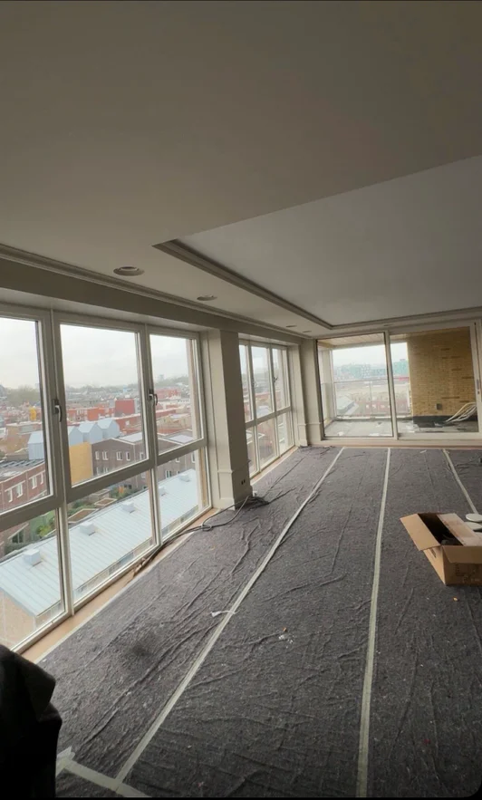
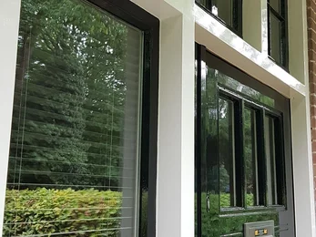
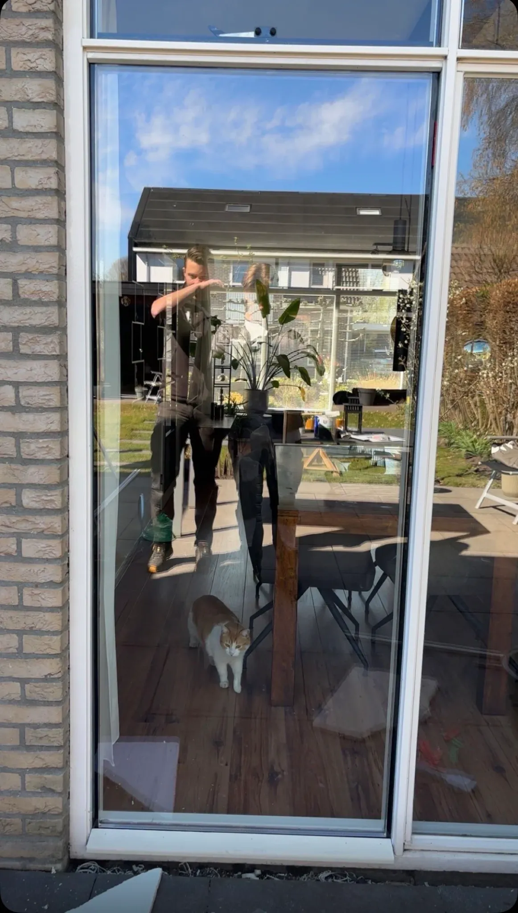
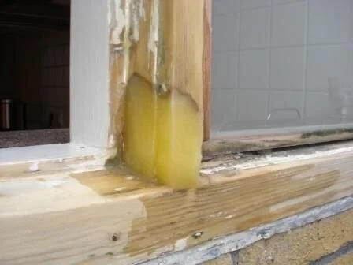

01
Binnenschilderwerk
Wanden, plafonds, deuren en kozijnen tot in detail verzorgd.
Schilderwerken · Onderhoud · Afwerking
Persoonlijk vakmanschap van Owen Vloo. Schilderwerk en onderhoud voor particulieren en bedrijfspanden, met aandacht voor ieder detail.
Mijn naam is Owen Vloo. Ik ben 21 jaar en de trotse eigenaar van Vloo Schilderwerken & Onderhoud. Als beginnend ondernemer werk ik elke dag aan mijn missie: hoogwaardig vakwerk leveren met een persoonlijke aanpak.
Met passie voor het vak en aandacht voor elk detail zorg ik voor een strak resultaat waar u jarenlang plezier van heeft. Voor particulieren én bedrijfspanden. Kwaliteit is geen belofte, maar mijn standaard.
Van binnen- en buitenschilderwerk tot kitwerk en houtrotreparaties. Voor particulieren en bedrijfspanden.

Wanden, plafonds, deuren en kozijnen tot in detail verzorgd.

Duurzame bescherming met een representatieve uitstraling.
Een verzorgde basis en een uitstraling die past bij uw ruimte.

Glaswerk als onderdeel van een verzorgde afwerking van uw pand.

Herstel van aangetast hout als sterke basis voor nieuw schilderwerk.
Met zorg aangebracht voor een strak geheel en een persoonlijke sfeer.
Nauwkeurig afgewerkt voor nette aansluitingen en een verzorgd eindresultaat.
Een kijkje in het werk van Vloo. Bekijk de veranderingen van dichtbij en ontdek alle foto's op de projectpagina.
Een helder proces voorkomt verrassingen en zorgt voor een resultaat waar u jarenlang plezier van heeft.
We bespreken uw wensen en bekijken de situatie ter plaatse.
U ontvangt eerlijk advies en een duidelijke, vrijblijvende offerte.
We werken zorgvuldig, netjes en volgens de gemaakte afspraken.
Samen controleren we het werk. Pas als alles klopt, zijn wij tevreden.
Een vraag, advies nodig of benieuwd naar de mogelijkheden? Bel of mail Owen rechtstreeks, of stel hieronder uw aanvraag op.